Drum machine + sampler · R36S
RHYTHM
A drum machine and sampler for the R36S, the handheld game console that costs about $40. Program twelve tracks with the D-pad, play them on the buttons, bend them with the sticks.
Runs on ArkOS, and on a Linux computer. Free software, GPL-3.0.
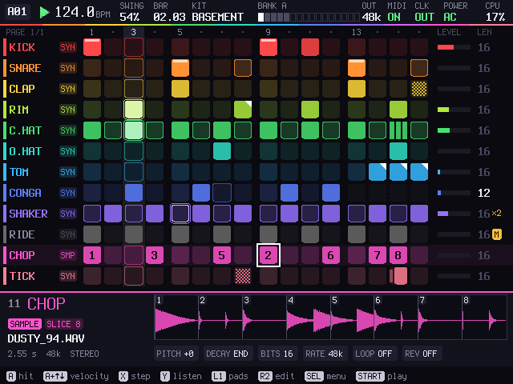
What it does
Twelve tracks
Each one a synthesized drum or a sample. 58 drums to start from, every part of them a knob; your own WAV files, cut into up to 32 slices at their hits.
Patterns
128 of them, up to 64 steps. Per step: velocity, nudge, ratchets, chance, conditions, accent, flam. Per track: its own length and speed.
Pads
Hold L1 and the D-pad and A B X Y play eight tracks; L2 plays the other four and a fill. With REC on, what you play goes into the pattern.
Two sticks
The left bends the drum, live or locked onto a step. The right plays repeat, reverse, tape stop, gate, filter, crush, dub and freeze, from any screen.
Sample and render
Record the master or one track and put the take back on a track, sliced. Render a pattern or the song to WAV.
MIDI and sync
Notes and clock in and out, MIDI learn, a monitor. Or a sync pulse on the headphone jack for Pocket Operators, volcas and modular.
Screens

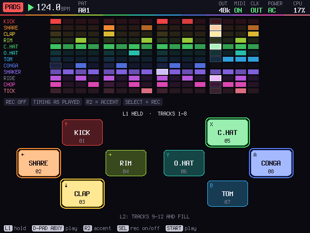

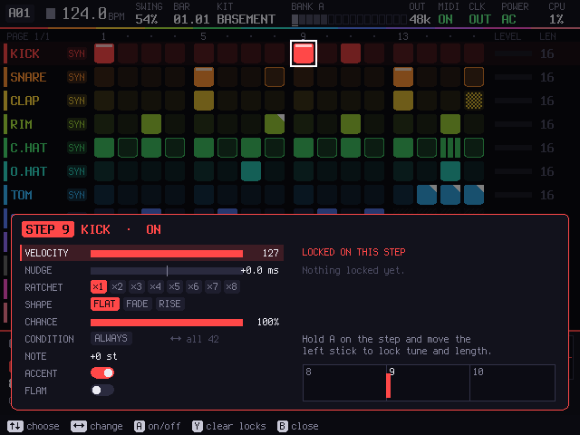

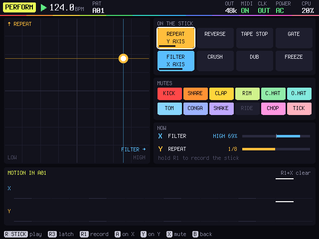

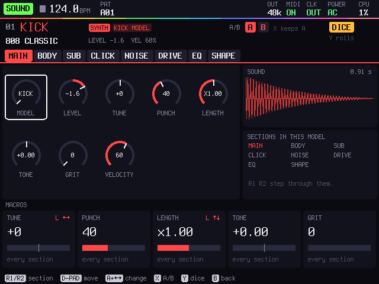

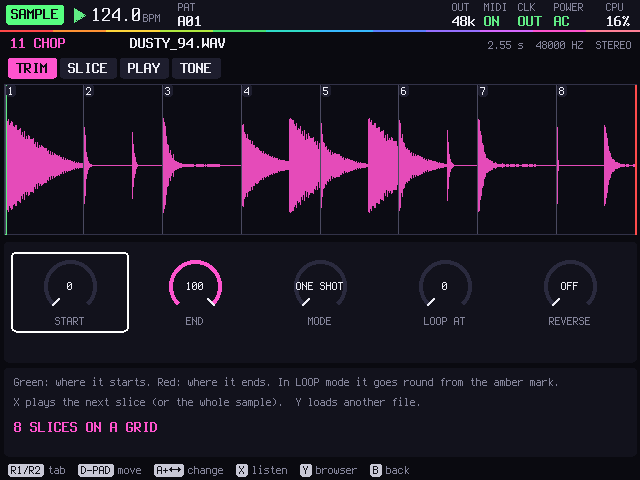

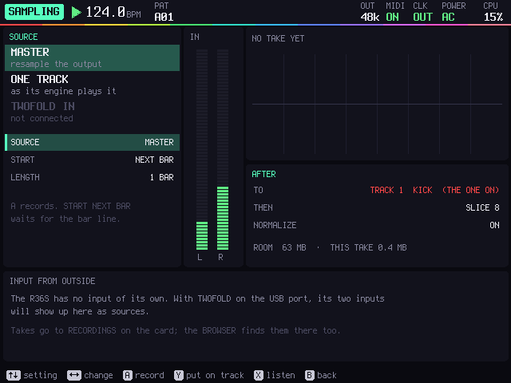

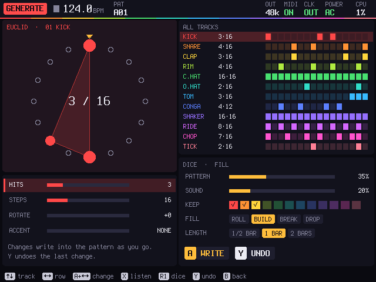

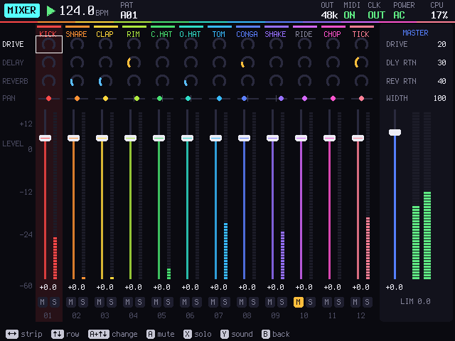

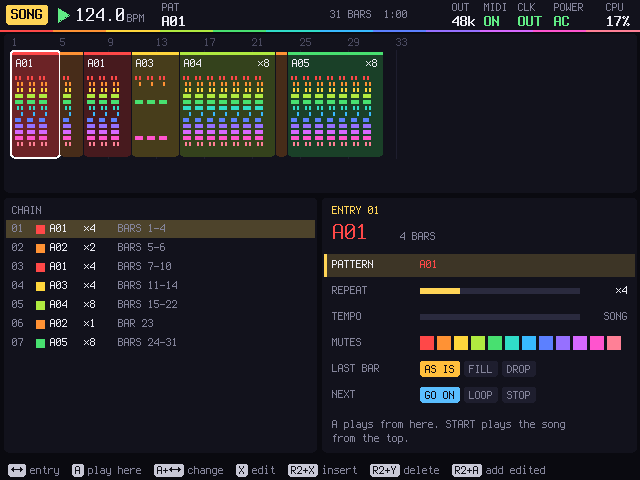

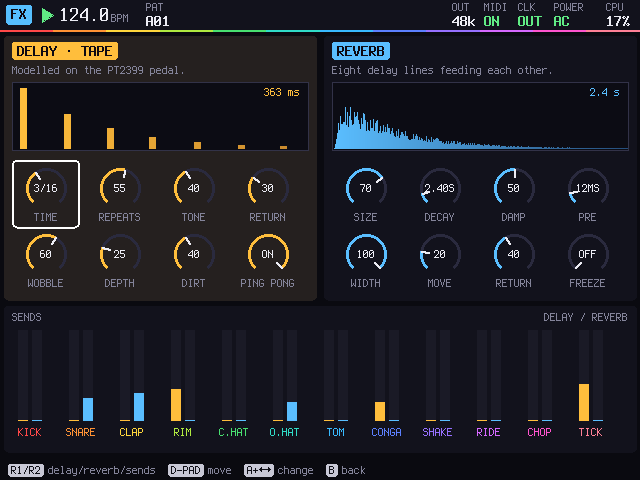

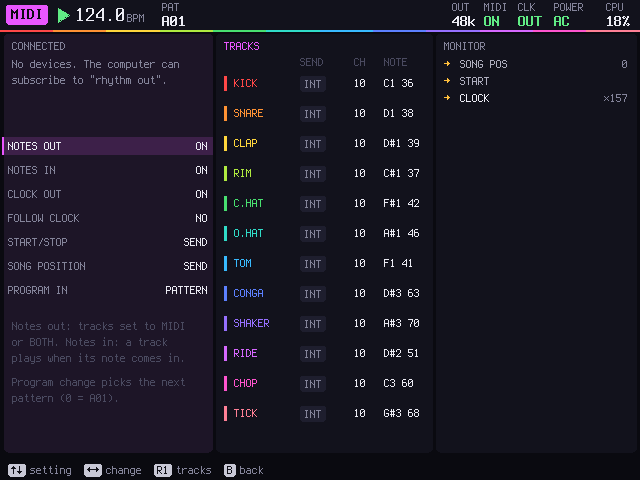

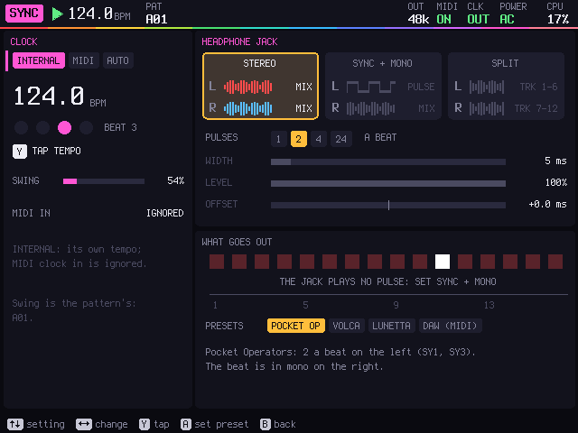
Seventeen screens in all; the README lists them. The design mockups show how they were drawn before the code.
Get one
What you need
An R36S with ArkOS on its SD card, and a computer with a card reader to copy RHYTHM and your samples onto it.
Headphones, or a cable to a mixer. Optional: a Pocket Operator, a volca or a modular clock input to sync, and a USB MIDI keyboard or controller.
Download for R36S
r36s-rhythm-port.zip · under 1 MB
An ArkOS port: unzip it into the ports folder on the card and it shows up under Ports.
Download How to installRun it on a computer
No R36S? It builds on Linux with SDL2 and ALSA, and the keys sit where the R36S's buttons do. All of it is open: code, tests, the port.
Read the guideInstall on the R36S
- Download
r36s-rhythm-port.zip. - Turn the R36S off and put its SD card in the computer. Open the EASYROMS partition and the ports folder in it. (On an R36S with two cards, the games may be on the second card.)
- Copy
Rhythm.shand therhythmfolder from the zip intoports. - Put the card back and turn the R36S on: Ports > Rhythm. A beat is loaded: press START.
Hold SELECT + START for a second and a half to leave. Your WAV files go in ports/rhythm/card/SAMPLES; projects, renders and recordings are saved next to it. It saves by itself a few seconds after every change.
Controls
START
Play and stop.
SELECT
The menu of every screen. Held with the D-pad, it jumps to PATTERN, MIXER, SOUND or PERFORM.
D-pad and A
Move, and set steps. With A held, the D-pad changes the value under the cursor.
X and Y
X opens a step's details; Y listens to the track, and with ←→ tries the next drum.
L1, L2
Held: the pads. SELECT in the pads turns recording on.
R2
Held: copy, paste, clear, undo, and the next pattern.
The sticks
Left: bend the drum, or lock the bend onto a step. Right: two effects at once; R3 holds them.
SELECT + START
Held for a second and a half: back to ArkOS. Your work is already saved.
Status
Plays on the maker's R36S under ArkOS; the first public version. The checks pass on a PC. The R36S has no audio input, so SAMPLING records RHYTHM itself. USB MIDI on the R36S is not confirmed yet.